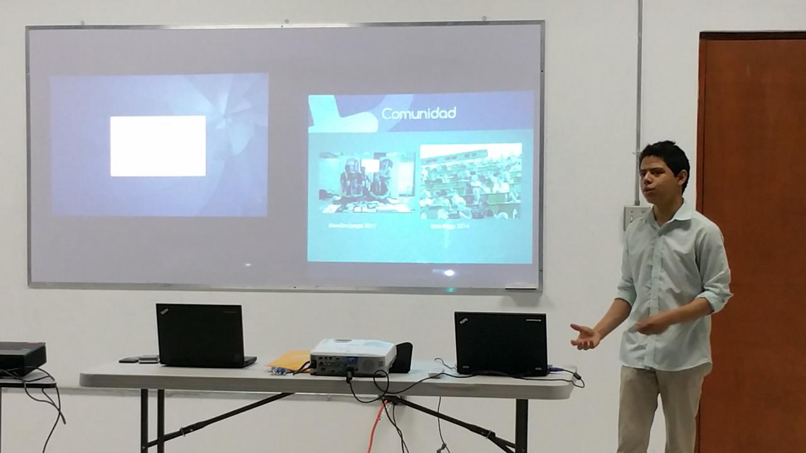
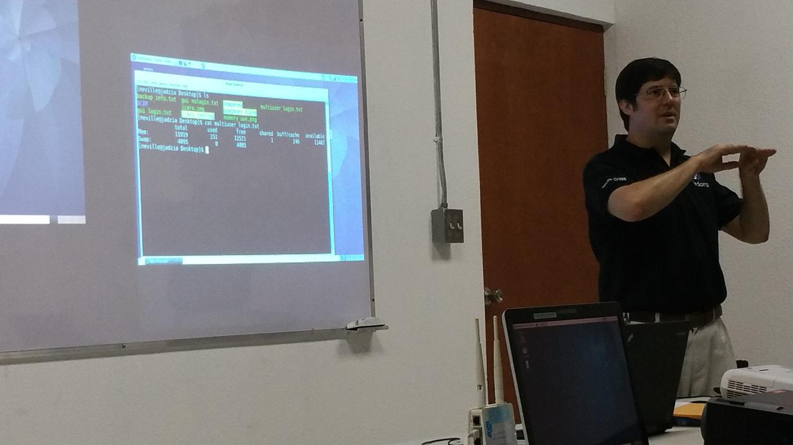
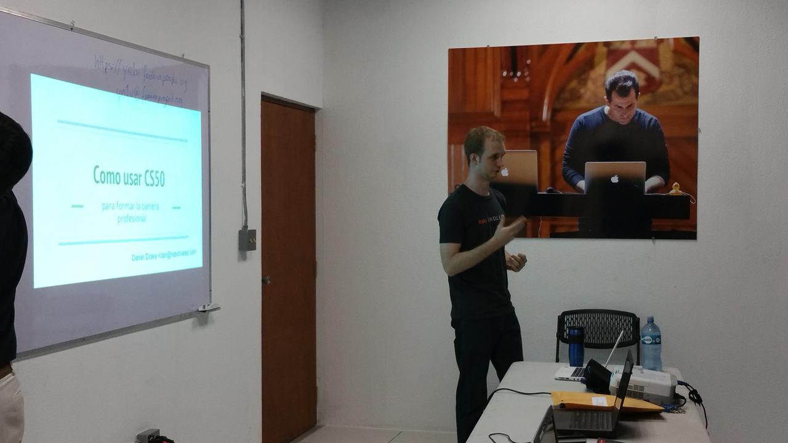
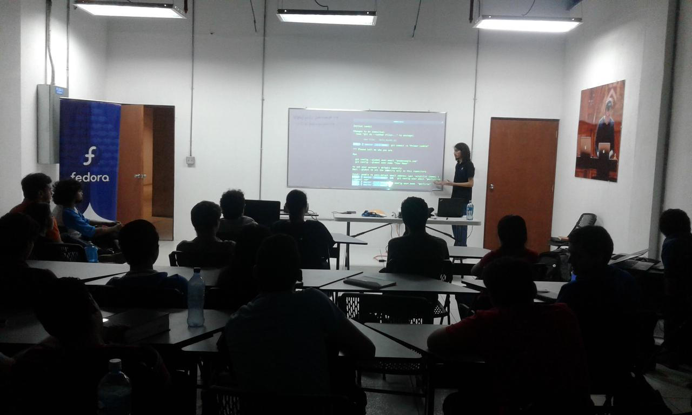
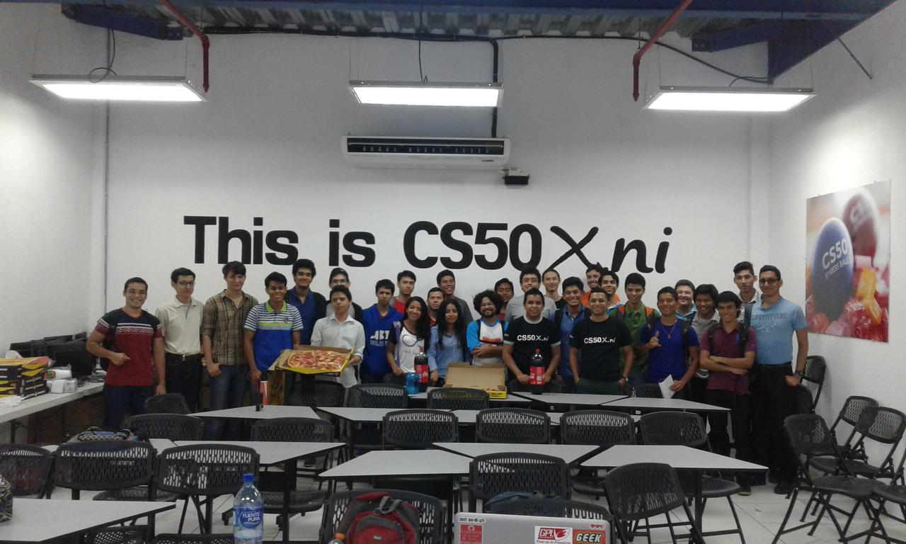
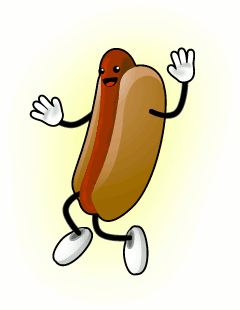

This was Fedora at CS50x.ni
El Martes 14 de Marzo la Comunidad de Contribuidores del Proyecto Fedora Nicaragua y el Staff del CS50x.ni, con el apoyo de Fundación UNO y The Fedora Project, tuvimos la oportunidad reunirnos para disfrutar de a una serie de charlas en las que los expositores compartieron sobre su experiencia en el uso del Software Libre, de la importancia y la utilidad de las diferentes herramientas de software empleados en el curso CS50x.ni. Las conferencias estaban orientadas a todo aquel que sea parte del curso CS50x.ni en la actualidad, o que desee formar parte del mismo en el futuro o personas interesadas en conocer más acerca del software libre y más específicamente sobre el Proyecto Fedora.
La cita fue en sótano del ala norte del edificio Rigoberto López Pérez de la Universidad Nacional de Ingeniería en el Recinto Universitario Simón Bolívar, en las aulas del proyecto CS50x.ni (Coding).
Las charlas iniciaron a las 9:00AM, como primer presentación tuvimos una "Descripción del Proyecto Fedora" facilitada por Eduardo Mayorga, Eduardo es Embajador del Proyecto Fedora, Mantenedor de Paquetes y actualmente forma parte del grupo de estudiantes que están participando en el curso CS50x.ni, nos explicó en qué consiste el Proyecto Fedora, su misión y visión como proyecto de Software Libre, además que nos dio una mirada de lo que consiste se parte de esta comunidad tanto a nivel local como a nivel internacional.
La segunda charla fue facilitada por Neville Cross, fundador y líder de Proyecto Fedora Nicaragua, en su charla Neville motivó a los asistentes conocer más sobre la importancia del uso y dominio de las herramientas de línea de comando presentes en todas las distribuciones GNU/Linux, para ello Neville hizo una demostración sobre el uso de herramientas de administración remota SSH en la que mostró como acceder a un equipo conectado en la misma red desde un segundo equipo mediante una línea de comandos y habló sobre algunas herramientas que permiten hacer monitoreo de recursos, todo ello de forma remota.
La tercer charla fue facilitada por Daniel S. Drake, Daniel es desarrollador de sistemas operativos de origen británico radicado en Nicaragua desde hace 8 años, Daniel llegó como parte del Proyecto One Laptop per Child, la charla fue relacionada a “Oportunidades de Empleo relacionadas a Linux después del CS50” en ella Daniel nos compartió sus experiencias y consejos adquiridos a lo largo de 15 años de experiencia como desarrollador y contribuidor de proyectos de Software Libre como lo son The GNOME Project, Daniel también ha sido líder del equipo de desarrollo del Kernel Linux para la distribución Gentoo, y nos compartió tips sobre cómo formar parte de proyectos de Software Libre e hizo énfasis sobre la importancia de automotivarse a contribuir con proyectos por la experiencia que uno adquiere al trabajar con gente talentosa de todas las partes del mundo.
En el último bloque de charlas Porfirio Páiz, contribuidor del Proyecto Fedora y estudiante del curso CS50x.ni, dio 3 ejemplos de como la distribución Fedora puede ser una herramienta muy útil para los estudiantes del CS50x.ni con demostraciones sobre el uso de herramientas “Comenzando con Git”, charla en la que hizo un pequeña demo sobre el flujo de trabajo para la administración de este sistema de control de versiones de código, en una segunda charla compartió “Una breve introducción a Docker” y nos habló sobre como esta herramienta está siendo usada en el CS50x.ni para ofrecer un entorno de programación fácil y sencillo de usar para quienes están tomando el curso y en una tercera charla nos habló sobre como montar una “Estación de desarrollo con Fedora”, en esta charla Porfirio habló sobre uno de los productos que ofrece el Proyecto Fedora para todos aquellos que están enfocados en lograr entorno de trabajo con el objetivo de materializar sus ideas de proyectos de software utilizando Fedora como base para construirlos, haciendo uso de los diferentes lenguajes de programación disponibles entre la repositorios de software de Fedora, así como otras herramientas.
Y como sorpresa final, los miembros de Fedora Nicaragua en conjunto del staff del CS50x.ni, compartieron con los asistentes un rato ameno lleno de charlas, intercambios de ideas y experiencias acompañado de bebidas bien frías y deliciosa Pizza, que fue amablemente patrocinada por The Fedora Project.
La Comunidad de Usuarios y Contribuidores del Proyecto Fedora están deseosos de continuar con estas sesiones de charlas y conversatorios enfocados en temáticas que sean de ayuda y de mucho interés para quienes se están adentrando al maravilloso mundo de la Programción gracias al CS50x.ni.
Los Créditos de las fotografías van para Letty Wood y Katherine Fernandez.
Sorry for the late post here is a happy Hot Dog:

Comments
Comments powered by Disqus